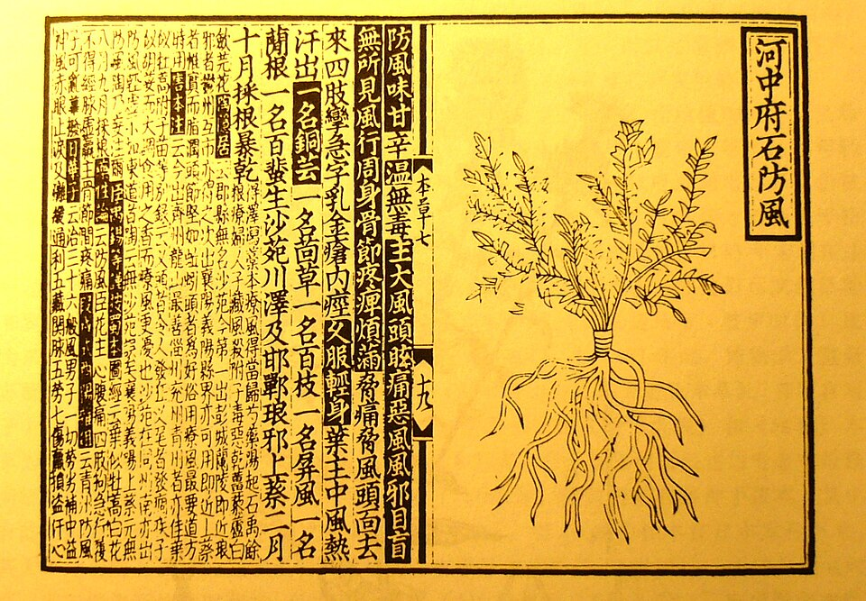

Fángfēng · Saposhnikovia root防风
Saposhnikoviae Radix · Exterior-releasing herbs: wind-cold dispersing herbsSaposhnikoviae Radix · 解表药·发散风寒药




- Flavour · nature性味
- acrid, sweet; slightly warm辛、甘，微温
- Channels归经
- Bladder, Liver, Spleen膀胱、肝、脾经
- Direction升降浮沉
- Slightly warm without being drying, with a moist quality; acrid, dispersing and ascending. Regarded as the 'moistening agent among wind herbs', it releases the exterior and expels wind gently, and also overcomes dampness, relieves pain and checks spasm; charred, it turns toward stopping diarrhoea and bleeding性微温而不燥，质润，辛散升浮；为「风药之润剂」，祛风解表力较缓和，兼可胜湿止痛、止痉；炒炭后偏于止泻、止血
- Toxicity毒性
- Non-toxic无毒
- Dose (pharmacopoeia)用量（药典）
- 5–10 g (ceiling 10 g)（上限 10 克）
Decocted; used raw to release the exterior, expel wind-damp and relieve itching, and charred to stop diarrhoea and bleeding煎服；解表、祛风湿、止痒多生用，止泻、止血宜炒炭用 - Pregnancy孕期
- No pregnancy restriction listed (not proof of safety)未列孕期禁忌（不等于已证明安全） The pharmacopoeia and textbook list no pregnancy restriction for Fang Feng, but this does not mean it has been shown to be safe in pregnancy. The Health Canada TCMI monograph requires products containing it to carry a label not to use it during pregnancy or breastfeeding; follow that advice and leave any formula use to a licensed practitioner.药典与教材未列防风的孕期禁忌，但这不等于已证明孕期安全。加拿大卫生部 TCMI 专论要求含本品的产品标注孕期、哺乳期勿用，孕期请遵此提示，复方用药由持照中医师判断。
- Health Canada加拿大卫生部
- Health Canada: monograph加拿大卫生部：有专论 The Health Canada NHPID monograph Traditional Chinese Medicine Ingredients (TCMI), dated May 29, 2026, includes Saposhnikovia divaricata (Fang Feng, Radix Saposhnikoviae) in Table 1, general medicinal ingredients. It requires all products to carry these statements: do not use during pregnancy or breastfeeding; ask a healthcare professional before use if taking prescription drugs, if you have a serious condition or an acute infection; stop use and consult a healthcare professional if symptoms persist or worsen. The Table 3 and Table 4 restrictions are not applicable to this herb here; always check the monograph itself.加拿大卫生部天然保健品数据库（NHPID）的传统中药成分（TCMI）专论（2026 年 5 月 29 日）收录 Saposhnikovia divaricata（防风，Radix Saposhnikoviae），列在表 1 一般药用成分中。该专论要求所有产品标注：孕期或哺乳期勿用；正在服用处方药、有严重疾病或急性感染者，用前先问医务人员；症状持续或加重即停用并就医。表 3、表 4 的限制项本味药不适用，使用时仍以专论原文为准。
- Conservation资源与保护
- Wild Fang Feng has declined from heavy harvesting and protective measures exist in China (exact protection grade to be verified); supply includes both wild and cultivated material; no CITES listing is known to the writer (to be verified).防风野生资源已因过度采挖减少，在中国有保护的呼吁与规定（具体保护级别待核），药用既有野生也有栽培；未见国际贸易公约（CITES）管制的记载（待核）。
- Source来源
- Saposhnikovia divaricata (Turcz.) Schischk.. Dried root of Saposhnikovia divaricata, carrot familySaposhnikovia divaricata (Turcz.) Schischk.（防风）。伞形科植物防风的干燥根
Traditional actions and indications功效与主治（传统）
🏛 Traditional statements, not efficacy claims; the modern evidence is graded further down.以下为传统说法，不是疗效主张；现代证据见下文分级。
- Expels wind and releases the exterior祛风解表
- Overcomes dampness and relieves pain胜湿止痛
- Checks spasm止痉
Common cold with headache; wind-damp painful obstruction; wind rash with itching; tetanus.感冒头痛；风湿痹痛；风疹瘙痒；破伤风。
How to recognise it怎么认
Growing植株 A perennial herb 30–80 cm tall; the base of the stem is crowded with brown fibrous remnants of old leaves; leaves are two to three times pinnately divided with narrow segments; in summer and autumn the stem branches at the top and bears small white flowers in compound umbels; the fruit is a slightly flattened, elliptical double-winged fruit. The main root is thick and long; it grows on grassland, hills and slopes.多年生草本，高 30–80 厘米；茎基部密生褐色纤维状的老叶残基；叶二至三回羽状分裂，裂片狭窄；夏秋季茎顶分枝，开白色小花，排成复伞形花序；双悬果椭圆形，略扁。主根粗长，多生于草原、丘陵和山坡。
Decoction pieces饮片 Round or oval thick slices; the outer skin is grey-brown or dark brown, rough, with longitudinal wrinkles; on the cut face the bark is pale brown with clefts and the wood is pale yellow; the root head has dense rings, sometimes with remnants of brown hair-like leaf bases. Distinctive smell, faintly sweet taste.为圆形或椭圆形厚片；外表皮灰棕色或棕褐色，粗糙，有纵皱纹；切面皮部浅棕色，有裂隙，木部浅黄色；根头部有密集的环纹，有的残留棕褐色毛状叶基。气特异，味微甘。
No photo of the root slices found on Commons (2026-11-25).缺防风饮片照（Commons 11-25 未检到）。
Processing炮制
- Raw Fang Feng生防风：: Expels wind, releases the exterior, overcomes dampness and relieves pain; for colds with headache, wind-damp painful obstruction, wind rash and tetanus祛风解表、胜湿止痛，用于感冒头痛、风湿痹痛、风疹瘙痒、破伤风
- Charred Fang Feng防风炭：: Charring weakens the wind-expelling action and turns it toward stopping bleeding and diarrhoea (usage of processed forms follows the textbook; to be verified)炒炭后祛风力减，偏于止血、止泻（炮制品用法以教材为准，待核）
Cautions and incompatibilities使用注意与配伍禁忌
The herb is warm and acrid-dispersing; use with caution in spasm from blood deficiency or in yin deficiency with fire (textbook position, to be verified). The pharmacopoeia does not list it as toxic. The Health Canada TCMI monograph requires product labels to say: do not use during pregnancy or breastfeeding; ask a healthcare professional before use if taking prescription drugs, if you have a serious condition or an acute infection; stop and see a healthcare professional if symptoms persist or worsen.本品药性偏温而辛散，血虚发痉及阴虚火旺者慎用（教材口径，待核）。药典未将本品列为有毒药物。加拿大卫生部 TCMI 专论要求产品标注：孕期或哺乳期勿用；正在服用处方药、有严重疾病或急性感染者，用前先问医务人员；症状持续或加重应停用并就医。
Interactions with medicines与西药的相互作用
None of the sources supplied provides human evidence on interactions between Fang Feng and specific drugs. Interactions are therefore not guessed from mechanism and none are listed. Anyone taking prescription drugs should ask a doctor or pharmacist first, as the Health Canada monograph also requires.本次提供的来源中，没有关于防风与具体西药相互作用的人体证据：国际综述（pmid-42586391、pmid-37733271）讨论的是植物学、药理、药代与毒理，未提供可核对的药物相互作用结论；pmid-32656897 为体外筛选研究。因此不凭机制推测，不列相互作用条目。服用处方药者，用前请先问医生或药师，这也是加拿大卫生部专论的要求。
Modern research, graded现代研究（分级）
- E5 A review summarises the botany, traditional uses, phytochemistry, pharmacology, pharmacokinetics, toxicology and quality control of Saposhnikovia divaricata. It concludes that the traditional uses have a scientific basis; its concluding sentence reports no specific human trial results.综述汇总了防风的植物学、传统用途、化学成分、药理、药代、毒理和质量控制，结论称其传统功效有科学依据；摘要的结论句没有报告具体的人体试验结果。
- E5 An in vitro study used ultrafiltration liquid chromatography mass spectrometry to screen and isolate lipoxygenase-inhibiting compounds from a Saposhnikoviae Radix extract; the subject was compounds in the extract, not the whole sliced herb, and it was not a human study.一项体外研究用超滤液相色谱质谱法，从防风提取物中筛选并分离出脂氧合酶抑制成分，研究对象是提取物中的化合物，而非饮片整体，也不是人体研究。
- E5 Another review covers the phytochemistry and modern pharmacology of Saposhnikovia divaricata and suggests that structure-effect relationships should be prioritised in further research; this is a research-direction recommendation, not an efficacy finding.另一篇综述回顾了防风的植物化学与现代药理，并提出构效关系应在后续研究中优先考虑；这属于对研究方向的建议，不是疗效结论。
In the classics古籍原文
「防風味甘溫無毒。主治大風眩痛，惡風風邪，目盲無所見，風行周身，骨節疼痛，煩滿。久服輕身。」——神农本草经
Shennong Bencao Jing (Divine Farmer's Materia Medica)
The Shennong Bencao Jing lists Fang Feng for severe wind with dizziness and pain, wind moving through the whole body and aching joints. It calls the herb sweet, warm and non-toxic, slightly different from the modern pharmacopoeia's slightly warm, acrid and sweet; for study, follow the current pharmacopoeia.《神农本草经》载防风主治「大风眩痛」「风行周身」「骨节疼痛」；原文称其「甘温无毒」，与今日药典「微温」「辛、甘」的记载略有差异，学习时以现行药典口径为准。
Where it is used: the web串联：它在哪些方里、连到哪里
Classical formulas (Shanghan, Jingui)经方（伤寒、金匮）
| Formula方 | Role角色 | Dose: original / today剂量：原书／今用 | Partners in the formula同方配伍 |
|---|---|---|---|
| Cinnamon Twig, Peony and Anemarrhena Decoction桂枝芍药知母汤 | Assistant佐 | original text: see the Chinese original四两 | Guìzhī (Cassia twig)桂枝 · Zhīmǔ (Anemarrhena rhizome)知母 · Báisháo (White peony root)白芍 · Máhuáng (Ephedra herb)麻黄 · Bai Zhu (white atractylodes)白术 · Fùzǐ (Aconite lateral root (processed))附子 · Sheng Jiang (fresh ginger)生姜 · Gāncǎo (Licorice root)甘草 |
| Hou's Black Powder侯氏黑散 | Envoy使 | original text: see the Chinese original十分 | Ju Hua (chrysanthemum flower)菊花 · Bái Zhú (white atractylodes rhizome)白朮 · Xìxīn (Asarum root and rhizome)细辛 · Fúlíng (Poria)茯苓 · Mǔ Lì (oyster shell)牡蠣 · Jié Gěng (platycodon root)桔梗 · Rénshēn (Ginseng (Asian))人参 · Fán Shí (alum)礬石 · Huángqín (Baikal skullcap root)黄芩 · Dāngguī (Chinese Angelica Root)当归 · Gānjiāng (Dried ginger)干姜 · Chuān Xiōng (sichuan lovage rhizome)芎藭 · Guìzhī (Cassia twig)桂枝 |
Later formulas (Song to Qing)时方（宋元明清）
| Formula方 | Role角色 | Dose: original / today剂量：原书／今用 | Partners in the formula同方配伍 |
|---|---|---|---|
| Saposhnikovia Sage-Inspired Powder防风通圣散 | Monarch君 | original text: see the Chinese original五钱 | Máhuáng (Ephedra herb)麻黄 · Jing Jie (schizonepeta)荆芥 · Bòhe (Chinese mint)薄荷 · Dàhuáng (Rhubarb root and rhizome)大黄 · Mang Xiao (mirabilite)芒硝 · Shígāo (Gypsum)石膏 · Huángqín (Baikal skullcap root)黄芩 · Lian Qiao (forsythia fruit)连翘 · Zhi Zi (gardenia fruit)栀子 · Hua Shi (talc)滑石 · Jie Geng (platycodon root)桔梗 · Chuan Xiong (Sichuan lovage rhizome)川芎 · Dāngguī (Chinese Angelica Root)当归 · Báisháo (White peony root)白芍 · Bai Zhu (white atractylodes)白术 · Gāncǎo (Licorice root)甘草 · Sheng Jiang (fresh ginger)生姜 · Cong Bai (scallion white)葱白 |
| Major Notopterygium Decoction大羌活汤 | Minister臣 | original text: see the Chinese original三钱 | Qiang Huo (notopterygium)羌活 · Du Huo (pubescent angelica root)独活 · Fang Ji (Stephania root; never the aristolochia species)防己 · Cang Zhu (atractylodes)苍术 · Bai Zhu (white atractylodes)白术 · Xìxīn (Asarum root and rhizome)细辛 · Bai Zhi (angelica dahurica root)白芷 · Huang Lian (coptis rhizome)黄连 · Huángqín (Baikal skullcap root)黄芩 · Zhīmǔ (Anemarrhena rhizome)知母 · Chuan Xiong (Sichuan lovage rhizome)川芎 · Sheng Di Huang (rehmannia root)生地黄 · Gāncǎo (Licorice root)甘草 |
| Nine-Herb Decoction with Notopterygium九味羌活汤 | Minister臣 | original text: see the Chinese original錢半 | Qiānghuó (notopterygium rhizome and root)羌活 · Cāngzhú (atractylodes rhizome)苍术 · Xìxīn (Asarum root and rhizome)细辛 · Chuānxiōng (chuanxiong rhizome)川芎 · Báizhǐ (dahurian angelica root)白芷 · Shēngdìhuáng (raw rehmannia root)生地黄 · Huángqín (Baikal skullcap root)黄芩 · Gāncǎo (Licorice root)甘草 |
| Chuanxiong Powder to be Taken with Green Tea川芎茶调散 | Assistant佐 | original text: see the Chinese original钱半 | Bòhe (Chinese mint)薄荷 · Chuanxiong (Sichuan lovage rhizome)川芎 · Jingjie (schizonepeta)荆芥 · Qianghuo (notopterygium root and rhizome)羌活 · Baizhi (angelica dahurica root)白芷 · Gāncǎo (Licorice root)甘草 · Xìxīn (Asarum root and rhizome)细辛 |
| Jade Windscreen Powder玉屏风散 | Assistant佐 | original text: see the Chinese original一兩 | Huángqí (Astragalus root)黄芪 · Bai Zhu (atractylodes rhizome)白术 |
Folk and single-herb remedies偏方、验方、单方
| Formula方 | Use用法 | Self-use能否自用 |
|---|---|---|
| Saposhnikovia, bletilla, and platycladus seed topical paste (infant open fontanelle)防风白芨柏子仁散外涂（小儿解颅） | External use外用 | Literature record only: not advised for self-use仅作文献记录，不建议自行使用 |
Patterns reached through these formulas经由这些方连到的证
- Externally contracted wind headache外感风邪头痛 ← Chuanxiong Powder to be Taken with Green Tea川芎茶调散
- Exterior wind-cold-damp外感风寒湿（兼里热或气虚） ← Major Notopterygium Decoction大羌活汤, Nine-Herb Decoction with Notopterygium九味羌活汤
- Wind-stroke with deficiency and cold中风（正虚、风邪夹寒） ← Hou's Black Powder侯氏黑散
- Defensive-qi deficiency with unsecured exterior表虚不固（卫气虚） ← Jade Windscreen Powder玉屏风散Qigong功法 Tai chi (simplified 24-form)太极拳（简化二十四式）
Exam notes (HER)考点（HER）
HER essentials: (1) Fang Feng and Jing Jie are both wind-cold dispersing herbs; Fang Feng is the 'moistening agent among wind herbs', expelling wind and releasing the exterior while overcoming dampness, relieving pain and checking spasm, whereas Jing Jie leans toward venting rashes and, charred, stopping bleeding; (2) three actions: expels wind and releases the exterior, overcomes dampness and relieves pain, checks spasm; (3) enters the bladder, liver and spleen channels, slightly warm without being drying; (4) used with Huang Qi and Bai Zhu in Yu Ping Feng San to secure the exterior without trapping pathogens (to be verified); (5) the Canadian label requirement about pregnancy and breastfeeding.HER 必考：①防风与荆芥同为发散风寒药，防风「风药之润剂」，祛风解表兼胜湿止痛、止痉，荆芥偏于透疹消疮、炒炭止血；②功效三项：祛风解表、胜湿止痛、止痉；③归膀胱、肝、脾经，药性微温而不燥；④玉屏风散中与黄芪、白术同用，益气固表而不留邪（待核）；⑤孕期、哺乳期的加拿大标示要求。
Sources依据
- Chinese Pharmacopoeia Commission. Pharmacopoeia of the People's Republic of China, 2020 edition, vol. I国家药典委员会《中华人民共和国药典》2020 年版一部
- Zhong Gansheng (ed.). Chinese Materia Medica (national TCM higher-education textbook series)钟赣生主编《中药学》（全国中医药行业高等教育规划教材）
- NCCIH. Herb-Drug Interactions: What the Science Says ↗
- Health Canada, NHPID monograph: Traditional Chinese Medicine Ingredients (TCMI), May 29, 2026 ↗
- Zhang et al. Saposhnikovia divaricata (Turcz.) Schischk.: A review of botany, ethnomedicinal uses, phytochemistry, pharmacology, pharmacokinetics, toxicology, and quality control. J Ethnopharmacol. 2027 ↗
- Huang et al. Development of a method to screen and isolate lipoxidase inhibitors from Radix Saposhnikoviae via ultrafiltration liquid chromatography combined with metablism in vitro. Phytochem Anal. 2020 ↗
- Gao et al. Advances in Phytochemistry and Modern Pharmacology of Saposhnikovia Divaricata (Turcz.) Schischk. Chin J Integr Med. 2023 ↗